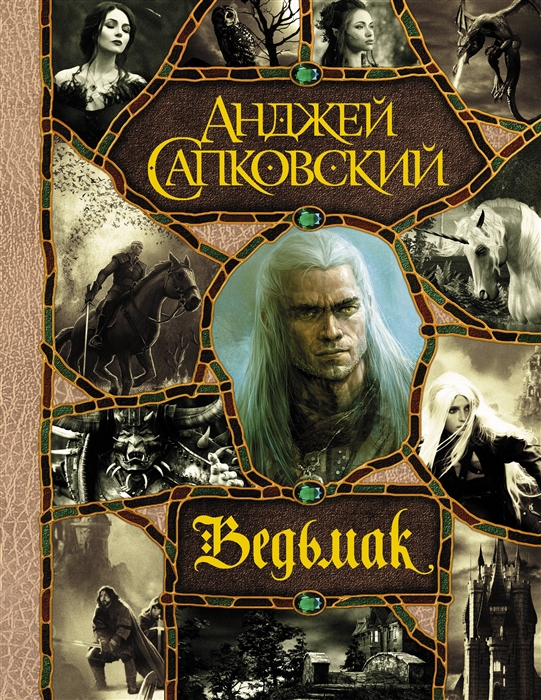

|
|
Эрагон
Купить
Эрагон — мальчик, живущий в деревне Карвахолл.
Отправившись на охоту, он случайно становится обладателем таинственного камня,
оставленного захваченной воинами Империи эльфийкой Арьей. Эрагон не подозревает о том,
что этот камень ищут подданные короля Гальбаторикса, и лишь со временем узнает,
что камень является драконьим яйцом, так как из него вылупляется дракон.
Эрагон становится из простого сельского жителя драконьим Всадником и находит наставника в лице
Брома,
который берет на себя ответственность за обучение Эрагона.
Сюжет первой книги заканчивается сражением варденов, Эрагона и его друзей с ургалами и шейдом при
Фартхен-Дуре — Городе-Горе гномов и последнем убежищем варденов.
|
|
|
Властелин колец
Купить
«Властели́н коле́ц» — роман-эпопея английского писателя Дж. Р. Р. Толкина,
одно из самых известных произведений жанра фэнтези. «Властелин колец»
был написан как единая книга, но из-за объёма при первом издании его
разделили на три части — «Братство Кольца», «Две крепости» и «Возвращение
короля».
|
.jpg)
|
Пляска Смерти
Купить
Тирион Ланнистер еще не стал заложником жестокого рока, Бран Старк еще не сделался
калекой, а
голова его отца Неда Старка еще не скатилась с эшафота. Ни один человек
в Королевствах не смеет
даже предположить, что Дейенерис Таргариен когда-нибудь назовут Матерью Драконов. ...
|
|

|
Ведьмак
Купить
Ведьмак-один из последних «ведьмаков», бродячих охотников на чудовищ.
В то время как первые книги цикла представляют собой сборники
рассказов о приключениях Геральта, нередко сатирически обыгрывая
фольклор и классические литературные сказки, сюжет последующих книг
представляет собой более масштабную историю, построенную вокруг Геральта
и его воспитанницы Цири, обладающей сверхъестественными способностями.
|
|
|
Дюна
Купить
Действие «Дюны» происходит в галактике далёкого будущего
под властью межзвёздной империи, в которой феодальные семейства
владеют целыми планетами. «Дюна» рассказывает историю молодого
аристократа по имени Пол Атрейдес, чья семья получает в управление
планету Арракис. В пустынях Арракиса добывают особое вещество — «пряность»,
необходимое для космических перелётов. После военного переворота Пол вынужден
скрываться среди жителей пустынь — фременов — и в итоге поднимает их на священную
войну против империи. «Дюна» соединяет в себе черты научно-фантастического и фило-
софского романа, используя экзотические для американской фантастики 1960-х годов
ближневосточные (арабские и персидские) имена и образы для создания многослойного
повествования, затрагивающего, среди прочего, темы политики, религии, технологии и экологии.
|
|
|
Пикник на обочине
Купить
Действие повести происходит на Земле предположительно в 1970-е годы в городке
Хармонт, в выдуманной англоязычной стране[14].
Примерно за 13 лет[15] до начала описываемых в книге событий в нескольких местах
на земном шаре возникает шесть «зон» — областей, в которых начинают происходить
странные явления, нарушающие известные законы физики. Зоны расположены вдоль плавной
линии на поверхности Земли, проекции так называемого радианта Пильмана — точки, лежащей
на прямой, соединяющей Землю и Денеб. Быстро выяснилось, что людям и животным проживать
в Зонах очень опасно, и всё население было из них срочно эвакуировано. Территории Зон
были обнесены ограждением, взяты под строгую охрану и официально стали предметом осторо-
жного научного изучения. Также очень быстро обнаруживается, что в Зонах много артефактов
непонятного предназначения. Некоторые из них весьма полезны — например, могут лечить болезни,
некоторые просто странные игрушки, а некоторые — крайне опасны.
|

|
Зов Ктулху
Купить
В первой части сюжет разворачивается вокруг таинственного
глиняного барельефа с изображением древнего божества Ктулху.
Рассказчик находит барельеф в вещах своего двоюродного деда
профессора Энджелла. Изображение было сделано скульптором
Уилкоксом в марте 1925 года. Скульптор сделал барельеф в
состоянии полусна. В это время Уилкокса преследовали загадочные
галлюцинации циклопических городов. Подобные кошмары в тот период
испытывали и многие жители. В основном это были художники, скульпторы,
архитекторы, и прочие люди с чувствительной психикой.
Наутро Уилкокс поразился своему творению и отнёс его профессору
Энджеллу. Оказалось, что барельеф очень напоминал статуэтку,
изъятую полицией у членов религиозной секты в Новом Орлеане в 1907 году.
|
|
|
Дракула
Купить
Произведение является эпистолярным романом, повествование
в нём складывается из писем и записей в дневниках его героев,
а также из газетных вырезок, действие же романа происходит
в конце XIX века. Всё начинается с того, что молодой стряпчий
из Великобритании Джонатан Харкер отправляется в австро-венгерскую
область Трансильвания к некоему графу Дракуле, с целью продажи ему
недвижимости в Англии[комм. 1]. Харкер добирается до городка Бистрица,
а оттуда дилижанс довозит его до перевала Борго, где после захода солнца
Джонатана встречает экипаж со странным кучером, который и привозит стряпчего
в замок графа, находящегося в безлюдной глуши Карпатских гор.
|
.jpg)
|
По ту сторону звезд
Купить
Первая часть захватывающей космооперы от Кристофера
Паолини – одного из самых известных мастеров фанта-
стики и фэнтези для взрослых и детей! Ксенобиолог
Кира во время рутинной миссии находит артефакт
древней цивилизации. Когда он случайно активируется,
Кира становится его носителем и обретает невероятные
способности. Поначалу девушка приходит в ужас от
перспективы утратить человеческую сущность. Однако
вскоре именно от нее будет зависеть судьба всего
людского рода.
|
|
|
Искусство войны
Купить
«Искусство войны» — самый известный
древнекитайский трактат, посвящённый военной
стратегии и политике и написанный Сунь-Цзы.
Состоит из 13 глав. Является основополагающим
текстом «школы военной философии», главным в
её каноническом Семикнижии.
|
|
|
Бусидо
Купить
Бусидо́ — кодекс самурая, свод правил,
рекомендаций и норм поведения истинного воина
в обществе, в бою и наедине с собой, воинская
философия и мораль, уходящая корнями в
глубокую древность.
|
|
|
О войне
Купить
«О войне» — трактат о военном искусстве, над которым с 1816 года до самой смерти работал прусский
офицер Карл фон Клаузевиц (1780—1831). Хотя сочинение не было доведено до конца, вдова Клаузевица
опубликовала его
magnum opus в 1832 году. Принято считать, что трактат Клаузевица оказал большее влияние на
военачальников конца XIX и
XX веков, чем любая другая книга[1].
|
|
|
Наука побеждать
Купить
«Наука побеждать» — книга генералиссимуса
российской армии А. В. Суворова, где собраны его
мысли и инструкции, относящиеся к военному
делу в России.
|
|
|
1984
Купить
Своеобразный антипод второй великой
антиутопии 20-ого века "О дивный новый мир"
Олдоса Хаксли. Что, в сущности, страшнее:
доведенное до абсурда "общество потребления"
или доведенное до абсолюта "общество идеи"?
По Оруэллу, нет и не может быть ничего ужаснее
тотальной несвободы...
|
|
|
Голодные игры
Купить
Действие происходит в постапокалиптическом мире, где после
неизвестной глобальной катастрофы на территории бывшей Северной
Америки образовалось антиутопичное государство Панем (англ. Panem).
Его столица Капитолий расположена в районе Скалистых гор, разделявших
когда-то США и Канаду, а вокруг неё сосредоточены двенадцать (изначально тринадцать)
округов — дистриктов, снабжающих столицу разнообразным сырьём.
|
|
|
О дивный новый мир
Купить
«О дивный новый мир» — антиутопический
сатирический роман английского писателя Олдоса
Хаксли, опубликованный в 1932 году. В заглавие
вынесена строчка из трагикомедии: О чудо! Какое
множество прекрасных лиц! Как род людской
красив! И как хорош Тот новый мир, где есть такие
люди! — Уильям Шекспир. «Буря»
|

|
Повелитель мух
Купить
«Повели́тель мух» — дебютный аллегорический
роман английского писателя, лауреата
Нобелевской премии по литературе, Уильяма
Голдинга, вышедший в 1954 году. В СССР на
русском языке роман был впервые опубликован в
1969 году
|